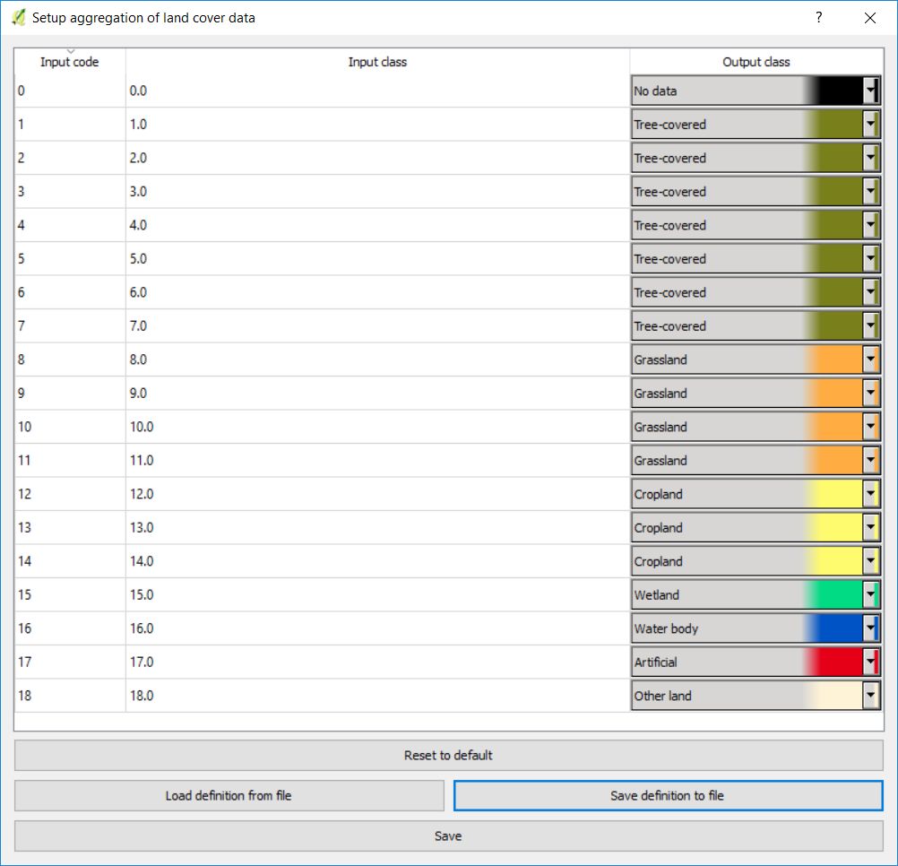
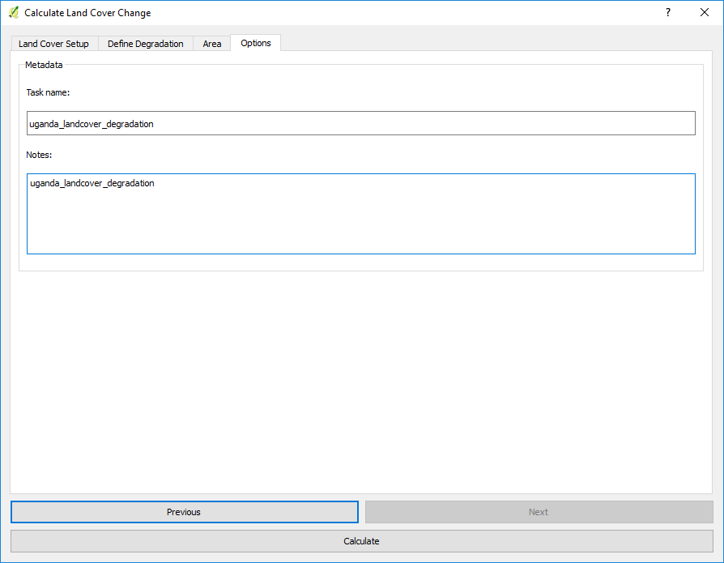

Use custom land cover data¶
Objective: Learn how to load custom land cover data and to compute the land cover change sub-indicator using Trends.Earth.
Estimated time of completion: 40 minutes
Internet access: Not required
Note
The land cover dataset for this tutorial were provided by the Regional Centre For Mapping Resource For Development and can be downloaded from this link.
To load custom land cover data click on the (
 ) icon in the Trends.Earth toolbar.
) icon in the Trends.Earth toolbar.

The Load data menu will open. Select Land cover from the Import a custom input dataset section.

In the Load a Custom Land Cover dataset use the radio button to select the format of the input file (raster or vector). For this tutorial select raster, but you could run it with your land cover vector data if you prefer. Click on Browse to navigate to the land cover file you wish to import.
Use the Select input file window to navigate to the file to be imported, select it, and click Open.
Back at the Load a Custom Land Cover dataset window you have options for selecting the band number in which the productivity data is stored, in case your input file is a multi band raster. You also have the option of modifying the resolution of the file. We recommend leaving those as defaults unless you have valid reasons for changing them.
Define the year of reference for the data. In this case, since the land cover dataset for Uganda was developed for the year 2000, define it as such. Make sure you are assigning the correct year.
Click Browse at the bottom of the window to select the Output raster file.
Click on the Edit definition button, this will open the Setup aggregation of land cover data menu. Here you need to assign each of the original input values of your dataset to one of the 7 UNCCD recommended land cover classes.
For this example, the Uganda dataset has 18 land cover classes:

- From the Metadata of the land cover dataset, we know that the best aggregation approach is the following:
No data = 0
Tree covered = 1 through 7
Grassland = 8 through 11
Cropland = 12 through 14
Wetland = 15
Water body = 16
Artificial = 17
Other land = 18
Use the Setup aggregation of land cover data menu to assign to each number in the Input class its corresponding Output class.
When you are done editing, click Save definition file. This option will save you time next time you run the tool, by simply loading the definition file you previously saved.
Click Save to continue
Back at the Load a Custom Land Cover dataset window, click Browse at the bottom of the window to select the Output raster file.
Navigate to the folder where you want to save the file. Assign it a name and click Save.

Back at the Load a Custom Land Cover dataset click OK for the tool to run.

A progress bar will appear showing the percentage of the task completed.

When the processing is completed, the imported land cover dataset will be loaded to QGIS.

Note
You have one imported custom land cover data for one year (2000), but two are needed to perform the land cover change analysis. Repeat now steps 1 through 11, but this time with the most recent land cover map. For this tutorial, we will use another land cover map from Uganda from the year 2015. Make sure to change the year date in the import menu.
Once you have imported the land cover maps for years 2000 and 2015, you should have them both loaded to QGIS.
Now that both land cover datasets have been imported into Trends.Earth, the land cover change analysis tool needs to be run. Search for the Trends.Earth toolbar within QGIS, and click on the Calculate icon (
 ).
).

The Calculate Indicators menu will open. In that window, click on Land cover button found under Step 1 - Option 2.

The Calculate Land Cover Change window will open. In the Setup tab, click on Custom land cover dataset. Use the drop down option next to Initial layer (initial year) and Final layer (target year) to change the dates accordingly. When done, click Next.

The Define Degradation tab is where you define the meaning of each land cover transition in terms of degradation. Transitions indicated in red (minus sign) will be identified as degradation in the final output, transitions in beige (zero) will be identified as stable, and transitions in green (plus sign) will be identified as improvements.
For example, by default it is considered that a pixel that changed from Grassland to Tree-covered will be considered as improved. However, if in your study area woody plant encroachment is a degradation process, that transition should be changed for that particular study area to degradation (minus sign).
If you have made no changes to the default matrix, simply click Next.
If you did change the meaning of some of the transitions, click on Save table to file… to save the definition for later use. Then click Next.
In the Area tab define the area of analysis. There are two options:
Use provided country and state boundaries: If you want to use this option make sure the Administrative area option is highlighted, and then select the First Level (country) or Second Level (state or province depending on the country).
Note
The Natural Earth Administrative Boundaries provided in Trends.Earth are in the public domain. The boundaries and names used, and the designations used, in Trends.Earth do not imply official endorsement or acceptance by Conservation International Foundation, or by its partner organizations and contributors.
If using Trends.Earth for official purposes, it is recommended that users choose an official boundary provided by the designated office of their country.
Use your own area file: If you want to use your own area of analysis, make sure the Area from file option is highlighted. Then click Browse and navigate to the folder in your computer where you have the file stored.
When you have selected the area for which you want to compute the indicators, click Next.

In the Options tab you can define the Task name and make some Notes to identify the analysis you are running. What information to indicate is optional, but we suggest noting:

Area of analysis
Dates
Indicators run
When you click Calculate, the Choose a name for the output file will open. Select where to save the file and its name, and click Save.

A progress bar will appear showing the percentage of the task completed.

When the processing is completed, the imported land cover degradation sub-indicator dataset will be loaded to QGIS.

Note
Refer to the Compute SDG indicator tutorial for instructions on how to use the land cover sub-indicator to compute the final SDG 15.3.1 after integration with changes land productivity and soil organic carbon.